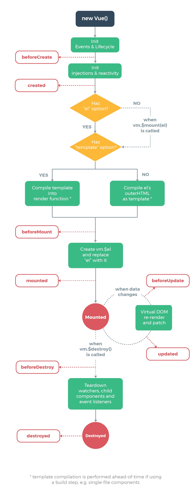
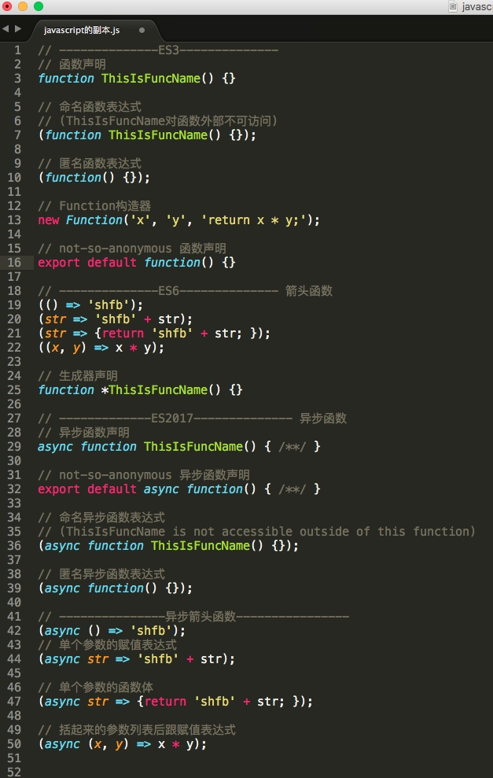

开发vue有半年多，重复性码代码，感觉这不是我要的，刨根问底一向是我的习惯，所以今天就在写法上给大家刨一下vue，一来深度学习vue的各种用法，二来对于理解她的高级特性也很有帮助，再来给大家分享我的总结，希望大家能从我这里感悟点滴，那便值得。
这里假设你已有 HTML、CSS 和 JavaScript 中级前端知识，并且了解 Vue.js 的一种或几种写法，并对单文件组件有一定了解，我这里主要做一些总结，如果有什么不妥之处可提出异议，共同探讨。
文中使用的示例代码均按照“单文件组件”方式编写。其中介绍的内容更多是关于javascript的写法。至于 template 和 style 不是本次介绍的重点。
本文可能会存在一些初学者不了解的知识点，或者名词，我会把我认为初学者有必要深究的名词在文末列出，供深度学习。
一、vue、vuex 简单介绍
-
官方是这么说的：
Vue.js 是一套构建用户界面的渐进式框架。Vue采用自底向上增量开发的设计。Vue的核心库只关注试图层。
在外界是这么理解他的：
轻量的 MVVM 框架（MVVM是Model-View-ViewModel的简写）。
至于什么是 MVVM⚠️ 这个留待后续分享。
-
Vuex 是一个专为 Vue.js 应用程序开发的状态管理模式。它采用集中式存储管理应用的所有组件的状态，并以相应的规则保证状态以一种可预测的方式发生变化。
介绍完今天上场的队员，那就直接开始操练了。
二、vue 相关写法
对于vue来说通过数据驱动页面渲染是他的核心特性，要了解这些特性就需要对一些概念进行说明。
先来看一个基础的单文件组件（⚠️示例只包含JS部分）：
export default {
// 数据相关属性，顺序按照调用逻辑排序
props:[], // 接收父组件属性
data () { // 本组件数据区
return {}
},
computed: {}, // 计算属性
watch: {}, // 监控观察属性变化
methods: {}, // 方法函数区
// 生命周期相关钩子函数
beforeCreate() {},
created() {},
beforeMount() {},
mounted() {},
beforeUpdate() {},
updated() {},
activated() {},
deactivated() {},
beforeDestroy() {},
destroyed() {}
}
来一张生命周期图，我个人一般了解一个新知识都会希望能得到一张类似于此的整体性的结构示意图，清晰、明了，一目了然。

上面图中那句英文的意思：如果使用构建步骤，模板编译将提前执行，例如：单文件组件。
了解了完整组件之后，可详细的研究一下各种属性、函数的写法。
2.1 核心概念-数据相关
接下来，分别讲解：data、computed、watch的写法；
有人说不是还有props、methods吗？因为他们两个写法单一，不做特别说明。
props：可以是数组或对象，用于接收来自父组件的数据。props 可以是简单的数组，或者使用对象作为替代，对象允许配置高级选项，如类型检测、自定义校验和设置默认值。
methods： 将被混入到 Vue 实例中。可以直接通过 VM 实例访问这些方法，或者在指令表达式中使用。方法中的 this 自动绑定为 Vue 实例。
⚠️不可以使用ES6的箭头函数。理由和data不可以使用箭头函数一样，我们接下来就讲。
2.1.1 data
data：官方推荐写法如下：
data () {
return {
// 这里必须设置纯粹的对象（含有零个或多个的key/value对）
}
}
问： 为什么不直接返回对象，而要用函数呢？
答： data 必须声明为返回一个初始数据对象的函数，因为组件可能被用来创建多个实例。如果 data 仍然是一个纯粹的对象，则所有的实例将共享引用同一个数据对象！通过提供 data 函数，每次创建一个新实例后，我们能够调用 data 函数，从而返回初始数据的一个全新副本数据对象。问：这里的data函数可以使用ES6的箭头函数吗？
答：不可以。理由是箭头函数绑定了父级作用域的上下文，所以 this 将不会按照期望指向 Vue 实例
‼️ 说直白点就是js对象如果直接赋值会存在对象引用⚠️，给你的组件使用造成不必要的困扰，所以你需要拷贝一个新对象（这里的拷贝而且是深拷贝⚠️）而不是使用原有对象的引用。
2.1.2 computed
写法有如下几种：
data () {
return {
firstName: "Wang",
lastName: "Jianhui",
workDays: 5
}
}
computed: {
// 第一种：仅读取，值只须为函数
fullName () {
return this.firstName + " " + this.lastName
}
// 第二种：可读取和设置新值
overTime: {
get () {
return this.workDays - 5
},
set (d) {
this.workDays += d
}
}
}
...
// 我们在使用以上属性的时候，就会得到以下结果：
this.fullName // => Wang Jianhui
this.overTime // => 0
this.overTime = 1
this.overTime // => 1
this.workDays // => 6
此时，有人就会说了我用你这个计算属性算，还不如直接写个 methods 来的痛快，毕竟我们前端er写 methods 已经习惯了。
我们可以将同一函数定义为一个 method 而不是一个计算属性。对于最终的结果，两种方式确实是相同的。然而，不同的是计算属性是基于它们的依赖进行缓存的。计算属性只有在它的相关依赖发生改变时才会重新求值。
还有人说，你这个计算属性的函数写法和官网的不一样啊
‼️⚠️js函数的写法之多，当我看到全部写法之后，就是这个表情👉😮
这里给大家插入一个额外的话题，js函数的写法：
------------------强势插入--知识点---分割线--------------------
这里就要给大家科普一下js的各种你见过没见过的写法了：
本来这里的内容是要另起一篇讲的，由于内容太多这里就简单看个图就可以了，待再开一篇详细说明一下，各种写法的来源。

---------------强势插入-----结束------------------
计算属性的用法，在后面与 methods 和 watch 的对比中，你或许还会得到一些启发。
2.1.3 watch
2.2 computed vs methods vs watch 对比
三、vuex 相关写法
四、vue 结合 vuex
五、⚠️名词解释
MVVM：
深拷贝：
对象的引用：